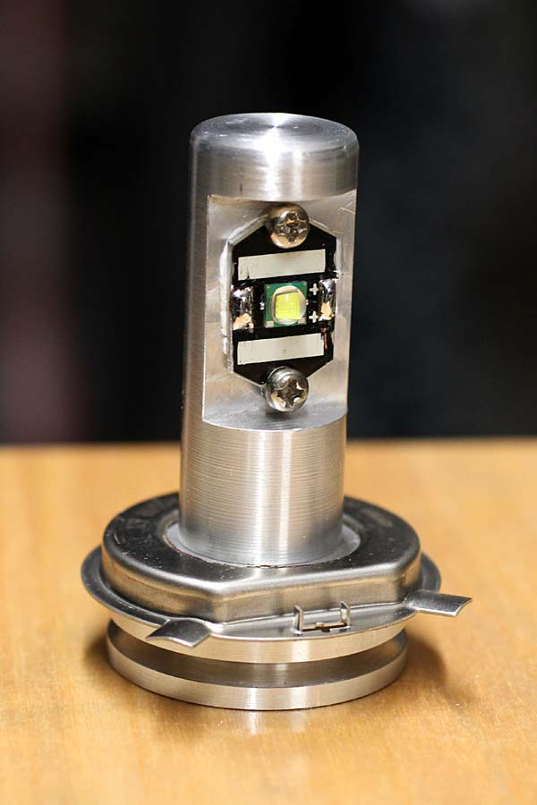
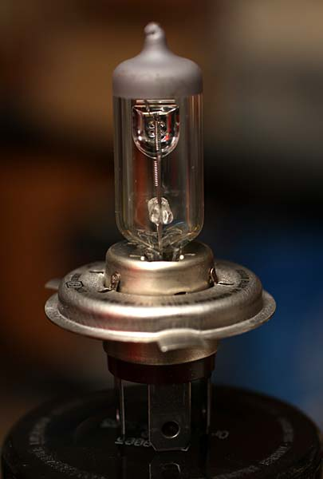
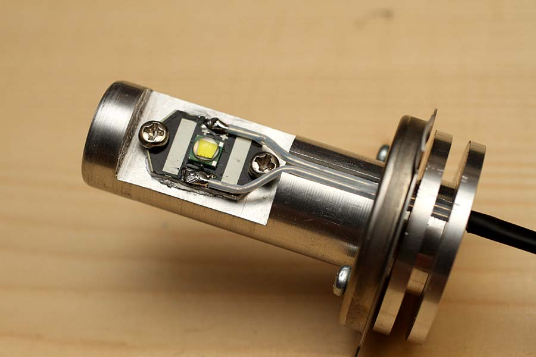
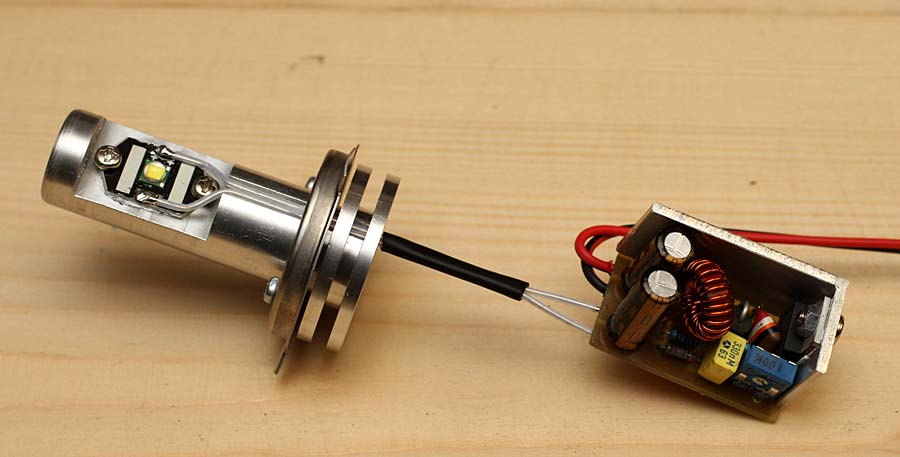

LED & illuminazione
Lampada led H4
Costruzione di lampada sostitutiva per alogena H4 "Fai da te" di R.Chirio
Indice della pagina
Novembre 2014
A livello commerciale, sono già disponibili lampade a Led in grado di sostituire le H4 come pure le H3 e le H7. Con questa realizzazione si vuole verificare i limiti di temperature e luminosità di un sistema retrofit da applicare a proiettori tradizionale, non progettati nel nascere per adottare lampade led.
Primo vantaggio nel usare i led è quello della riduzione di potenza assorbita a livello di 4-5 volte minore rispetto al filamento tradizionale da 55W 12V
Se i parametri di funzionamento dei led vengono rispettatati, avremo una durata anche 10 volte maggiore rispetto alla lampada ad alogeni, questo vuol dire che per tutta la vita dell'auto non sarà più necessario sostituire le lampade esaurite/bruciate.

prototipo di lampada con led da 10W 1000Lumen

Classica lampada H4 55W a filamento
Gennaio 2015
Le lampade H4 con filamento scaldano parecchio, vanno pertanto montare dentro a riflettori che resistano il caldo di oltre 100°C nello zoccolo. I riflettori sono stampati con resina termoindurente e devono durare parecchio con le lampade accese.
Montando un led in sostituzione non avremo più emissioni di raggi infrarossi quindi calore ridotto.
Per un buon rendimento luminoso è bene sostituire i riflettori vecchi con superficie riflettente ingiallita e opaca, come pure i vetri frontali se opachi vanno sostituiti.
Gruppo led.
- Il LED H4 realizzato al tornio e fresa da un tondo di alluminio.
- Al momento è presente solo il led per la luce di incrocio (anabbagliante)
- Il centro led è stato posizionato esattamente al centro del filamento della lampada tradizionale.

Gruppo H4 con alimentazione 12V

Gruppo H4 con il regolatore SW2800, sempre meglio avere un regolatore per ogni led.
E' bene mettere un fusibile da 4AT in serie a ogni lampada.
Lampade H4 commerciali
Car 120 LED 3528 SMD H4 Xenon-White Fog Head Light Headlight Lamp Bulb DC 12V
- Non viene specificata ne la potenza assorbita ne la quantità di luce emessa.
- La distribuzione a 360° dei led e anche il posizionamento sulla lunghezza porta ad avere molteplici punti di focale che danno una luce praticamente impazzita non idonea alla circolazione.
- La mancanza di un sistema di dissipazione porta a pensare che i led raggiungano temperature limite a svantaggio della durata degli stessi.
DA NON USARE!!!!
HONSCO H4 24W 1800lm 5000K L/H Cool White Light LED Car Headlight Kit (DC12~18V / 2 PCS)
- 1800 Lumen con tutti e due i led accesi quindi intesa come abbagliante, con 1 solo led quindi luce di incrocio siamo a 12W 900Lumen
- Buona costruzione con ventilazione forzata.
- Non è a tenuta di acqua, in particolare il Driver!
-
Si può montare ma non è omologata!
Commenti
- Meglio sempre usare lampade omologate. O meglio tutto il gruppo ottico originale.
2014 © Roberto Chirio: all rights reserved.